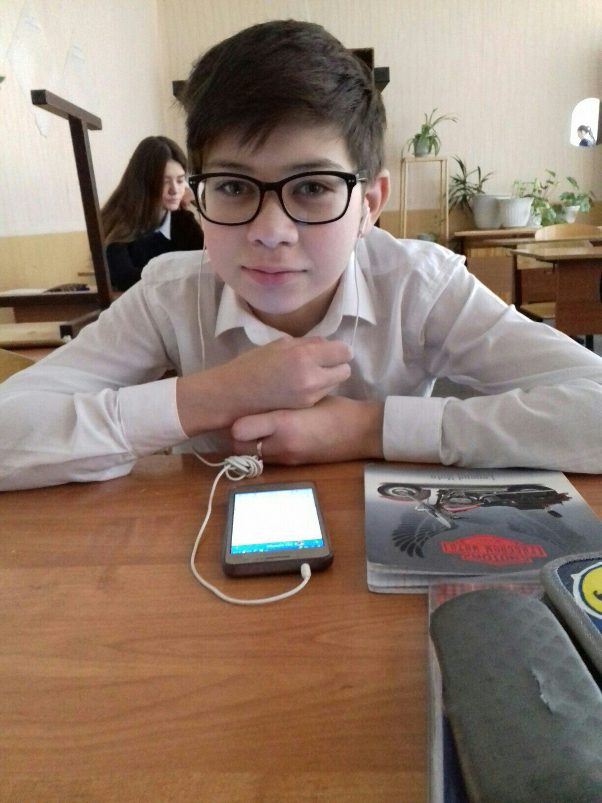

 Насретдинов Ильмас обучается в школе №68 с первого класса, в нашем классе с 5 класса. За время учёбы показал удовлетворительные знания в школьных предметах, но если постарается, то может учиться только на четвёрки и пятёрки, полную меру своих сил. Работает довольно неплохо, но не очень хорошо запоминает материал уроков. Если его попросят выполнить задание, то он не всегда относится к этому очень ответственно. Не всегда соблюдает правила поведения в школе. Имеет общее развитие. Заинтересован в получении новых знаний из разных областей науки и культуры. К выполнению общественных поручений относится хорошо, ответственно, но может и попросить помощи у товарищей. Состояние здоровья хорошее, юноша любит занятия физкультурой и спортом. Характер дружелюбный, отзывчивый. Имеет много друзей и знакомых. Всегда охотно вступает в контакт с людьми. Ведет здоровый образ жизни. Вредных привычек не имеет. В суждениях самостоятельный. Проявляет заботу по отношению к знакомым и незнакомым людям.